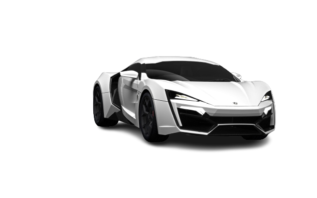
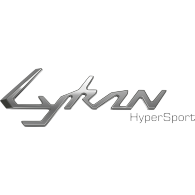

The first hypercar created by W Motors, the Lykan HyperSport, catapulted the company to
international
stardom when it took center stage in Universal Studios’ Furious 7. It was featured as the hero car in the
movie and is the most expensive car ever to be featured in The Fast & The Furious Franchise.
ENGINE
*Boxer Type, 228.6 in3, 3756 cc Flat 6
*Twin Turbocharger with Independent Intercooler
*Mid-Rear mounted engine
*Rear Wheel Drive
*Fully Catalyzed, Stainless steel exhaust system with active bypass valves
*Max Power 552KW (780hp) at 7100 rpm
*Max Torque 960Nm at 4000rpm
TRANSMISSION
*Six Speed Manual Sequential Gearbox
*Limited Slip Differential
*Transversely Rear Mounted
SUSPENSION
*Front Axle: McPherson-strut, anti-roll bar
*Rear Axle: Multi-link suspension, horizontal coil over shock absorbers, anti-roll bar
INTERIOR
*Carbon Fiber Center Console Finish
*Dual-Stage – Driver/Passenger Front Airbags
*Electric Exterior Mirrors
*Automatic Temperature Control
*Trip Computer
*Bluetooth Telephone Preparation
*Satellite Navigation System
*Alarm (with volumetric and tilt sensor) and immobilizer
*3G Internet Router.
FUEL CONSUMPTIONS
*Urban: 20.0 (L/100km) (mpg)
*Non-Urban: 9.9 (L/100km) (mpg)
*Combined: 13.5 (L/100km) (mpg)
*CO2 Emission (g/kg): 311
*Efficiency Category: G